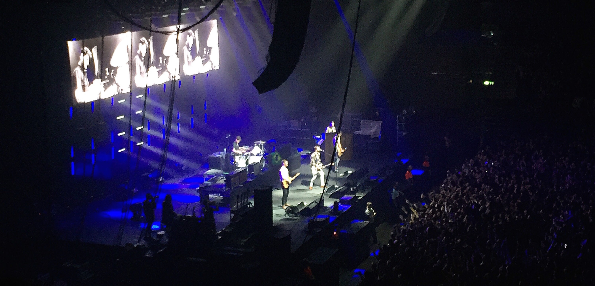
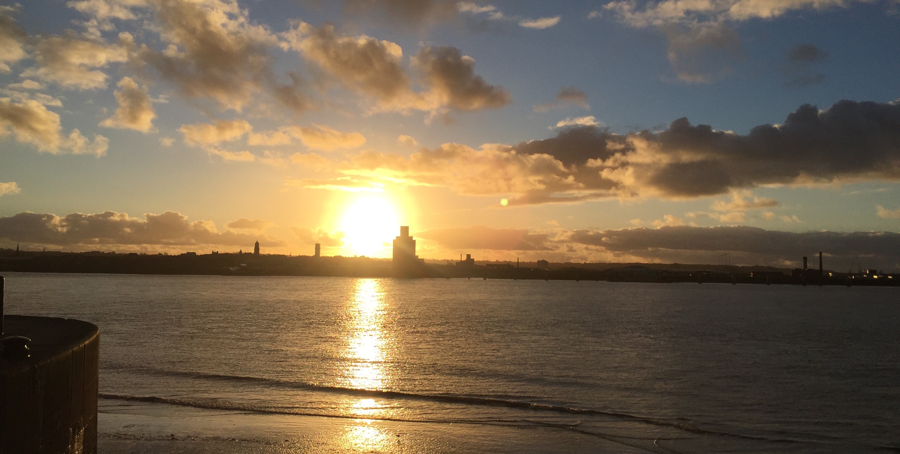

The sunset from Lime Street Station

The Courteeners at the Echo Arena

Albert Dock

The sunset from the docks

Brian Fallon live at the o2 Academy
Sefton Park in the autumn
Here you will find a little introduction into all that Liverpool has to offer.
From it's countless and evergrowing collection of restaurants and bars to the little spots you can go to see a stunning skyline.
Feel free to look around and I hope you discover something new today.
©2017 Guide To Liverpool